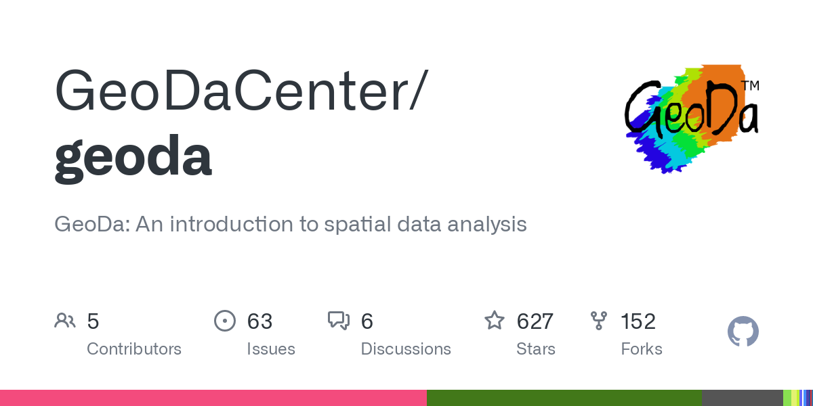

<!DOCTYPE html>
<html lang="en-US"></html>
<html>
  <head>
    <title>GeoDa Tutorial</title>
    <meta charset="UTF-8"/>
    <link rel="stylesheet" href="geoda.css">
  </head>

  <body>
    <div id="title">
        <h1>GeoDa practical course</h1>
    </div>
    <div>
        
    </div>
    <br>
    <br>
    <div id="About_GD">
        <h3>About this course</h3>
    </div>
    <br>
    <br>
    <div id="greendiv">
        <div>
            <b>This course includes 6 lessons and practical tasks.</b>
        </div>
        <br>
        <div>
            You will learn theese topics:
            <ul>
                <li>Basics of cartography and geoinformatics</li>
                <li>Graphics</li>
                <li>How to create thematic maps</li>
                <li>Clustering</li>
                <li>Spatial statistics</li>
            </ul>
        </div>
        <br>
        <br>
        <br>
        <div>
            The target audience for our course is economists who want to learn skills in geoinformatics and learn how to use spatial data in their work. It will helps
            economists how to use methods of statistics for spatial data analysis without programming. Also, economists will learn how to correctly use methods
            of visualization to create maps.
        </div>
    </div>    
  </body>
